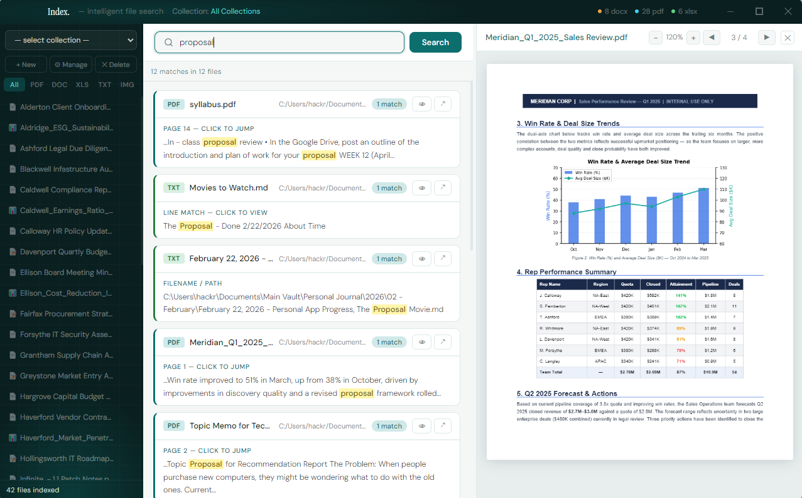
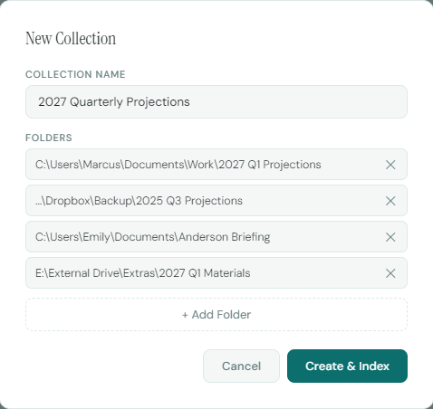

Live file changes, new file additions and deletions
With support for PDF, DOCX, XLSX, TXT and every other major file type, if it exists, you can find it.
Once you add your files, you never need to re-add them. Fully searchable, always.
Always running. Index is ready when you need it. Silent when you don't.
Quicker file access leads to faster breakthroughs. Less time searching means more time working.
Index is entirely local. Nothing touches the cloud. Connect 10,000+ files at once, with no slowdown.
Quicker file access leads to faster breakthroughs. Less time searching means more time working.